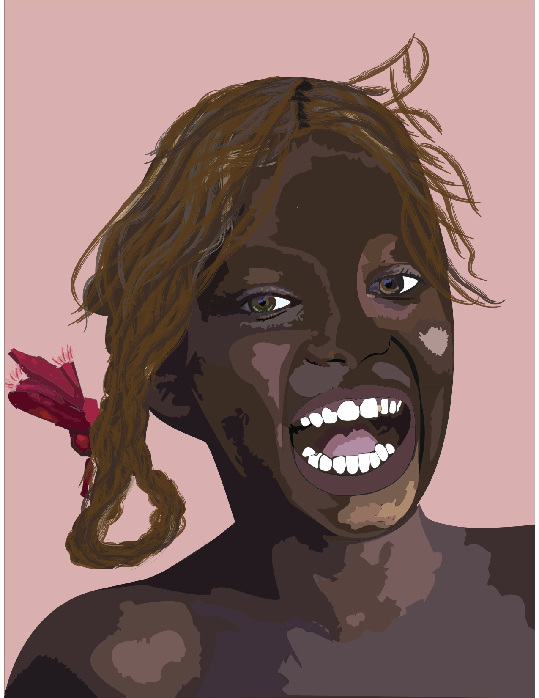
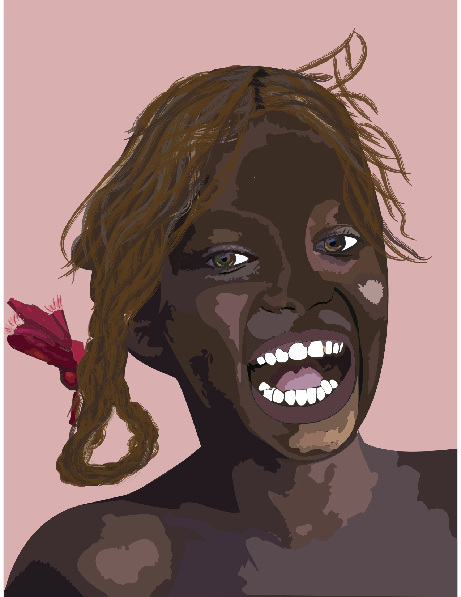

CORINA AZPURUA
WELCOME TO MY PORTFOLIO
WHO AM I?
WORK WORK WORK WORK WORK WORK WORK WORK WORK
CAMPAIGNS
Throughought my different design classes at the University of Miami and other external venures, I have been working on different campaigns such as promotional, awareness, and educational campaigns
Mock-Up Campaign
Miss Representation
Miss Representation is a documentary directed by Jennifer Siebel Newsom that highlights the objectification and misrepresentation of women in the media, government, and workforce. The film explains the different ways the media takes advantage of how the ideal woman should look like and act. For example, ever since women are little girls, they are convinced men’s independence translates into women’s dependence on them. Stereotypes like the one mentioned above have significant negative impact on our society and female development. According to the documentary, the underrepresentation of women in the media can lead to mental health problems such as depression and anxiety as well as substance abuse and domestic violence. It is up to our generation to put an end to female objectification. Miss Representation calls for policy change, awareness, mentorship, education and asks its viewers to visualize a world with more female leaders, gender equality, and a diverse media, government, and workforce. Representation, diversity and respect are the answers.
Brand Campaign
Cuatro Por Venezuela
Cuatro por Venezuela Brand Book Design was my first ever brand-book design, and organization re-design. I loved branding and would love to keep working on it throughout the future. As I began to design, I framed my thoughts around the idea of holding on to HOPE. What do I mean by hope? Hope of recuperating the beautiful country of Venezuela and the feeling of bringing aid to those most in need. My approach throughout is very minimalistic and geometric. I chose a blue/yellow colored designs. I chose yellow because, in the Venezuelan culture, it symbolizes good luck and joy. As its compliments, light and darker blue, which deliver the visuals through a calming and serene presence. I was inspired by the “Harina Pan” package (the corn meal used to make typical Arepas) and the Venezuela Live Aid concert’s stage design.
CLASS PROJECTS
Throughought my different design classes at the University of Miami and other external venures, I have been working on different campaigns such as promotional, awareness, and educational campaigns
MAGAZINE
I designed this magazine in November 2018. It was my first time ever exploring and learning to use Indesign. I loved creating this projectt- it is still one of my favorites. At the end of the semester, I sent the magazine to print to a professional printer, and it came out looking as cool as ever!
PORTRAIT
I created this portrait in Illustrator. It is mostly all pen tool and brushes. Here, I present the original photo, as well as my interpretation of it. This project introduced me to illustrator, and let's just say I fell in love. I am team Illustrator forever!!
 
